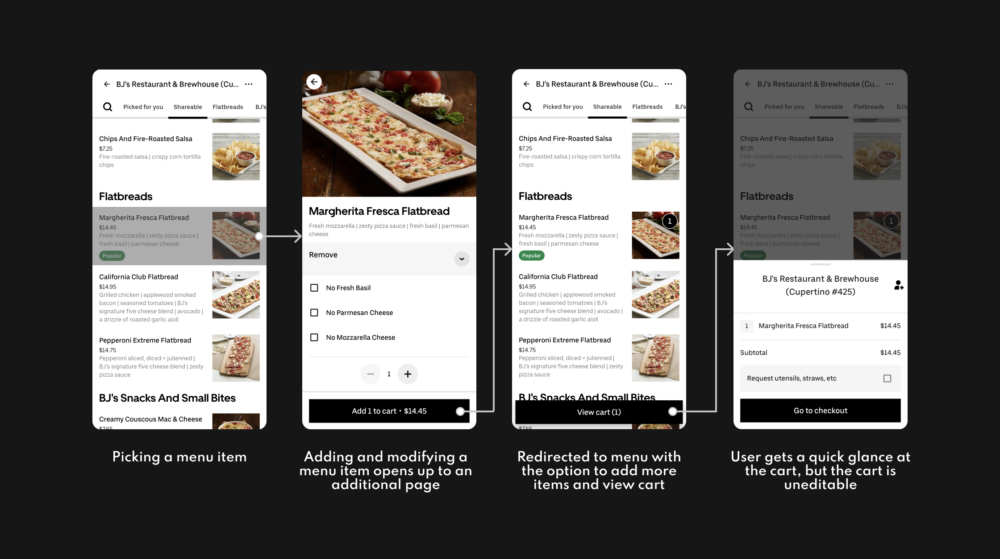
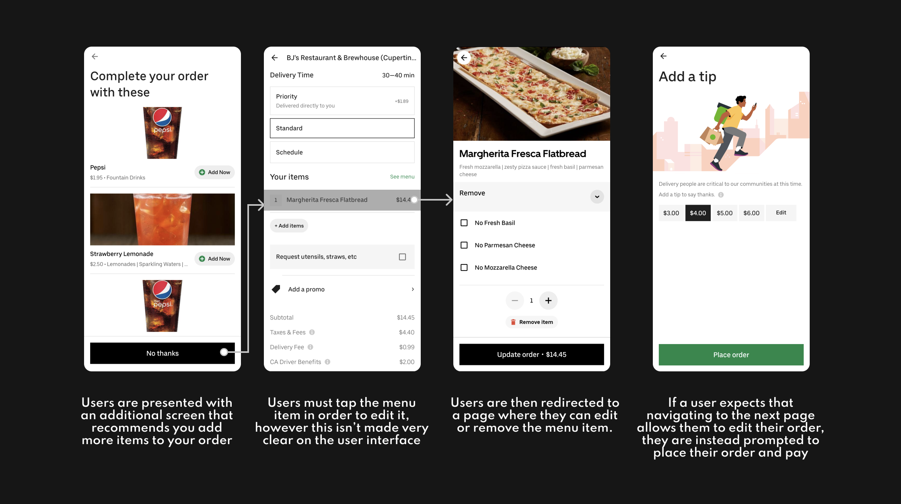

üçü "How can we improve ordering food online?"
December 2021 - January 2022
UX Researcher
UX/UI Designer
Just me!
For the Kleiner Perkins Fellowship Design Challenge,
I decided to redesign the ordering process on the Uber Eats app from a UX/UI perspective.
Uber eats is a food service app under Uber Technologies that delivers food from local restaurants straight
to your door.
I chose to explore an Uber product because Uber, especially Uber Eats, is something I use fairly regularly (I'm getting tired of dorm food!).
Redesigning a product feature is something I've never done before, so I thought I'd work with a product I was familiar with.
To identify a problem on the app to explore, I went through three stages of research:
surveying Uber Eats users, reading through reviews
online, and conducting product research
by reading up on how Uber Eats functions and by testing the app.
Most, if not all of my online research was done by browsing reviews on the Google Play Store.
Majority of the negative reviews focus on a lack of customer service, the app constantly crashing, or high delivery fees -
aspects of an app that are not easily solvable from a UX designer standpoint.
I had some Uber Eats users I knew fill out a Google form that asked questions about their experiences using the app.
Most respondents found a liking to the app and didn't have any issues with it, however similar to the results from conducting online research,
a lot of the problems that were listed while using the app were issues that are reliant on factors such as restaurant
modifications, decreases in fees, Uber drivers, or logistical issues - not issues that were reliant on being solved by UX designers.
I noticed 3 central problems while demoing the app:
If you're using the app for the first time or aren't that familiar with it, it's really hard to find where to delete
and modify orders, and you have to go navigate a lot of pages to find where to do so.
To report any problems with your order to the Uber customer service team, a user needs to get through a lot of pages
to report specific issues or receive specific help. The help section also isn't particularly easy to find on the app -
it's found at the bottom of the profile tab.
Drivers tend to be later than the ETA listed a lot of the times I've placed orders, and the time on the delivery
estimates are usually underestimated rather than over. Users also typically don't get updates on the driver's end
or updated estimated arrival times.
After going through all three stages of research, the problem I chose to explore was Uber Eats's ordering system.
As I further explored the ordering system on the app, I took note of the most standout problems I experienced while picking a restaurant, adding items to my cart, and editing my order.
While majority of my questionnaire's responses weren't applicable to solving ordering issues, one user did note that they
noticed deleting menu items was an inconvenience. Modifying and deleting components of an order is not made explicit by
recognizable buttons (e.g. a pen or a trash can to represent editing or deleting, respectively)
Even though they were seemingly small and still allowed for a
smooth ordering experience, they noted that in the long run the issue may become problematic to them as a user.
"[The problems involving ordering are] kind of like a sleeper problem. You tend not to think about it until it
happens, and then it generates a lot more stress than it needs to."
-Survey respondent
The typical ordering process, represented by Uber Eats screenshots, are typically as follows:
 In response to each pain point - I wrote out a few possible solutions to make sure as many problems possible got solved.
While writing out ideas are great, I always can best justify them when I visualize them. Here's a site (or app, I suppose) map of my intended design, as well as some low-fidelity wireframes of the product.
Here are the final, high-fidelity mockups of my ideations!
Thanks for taking the time to read this! Here are some other projects I've worked on.